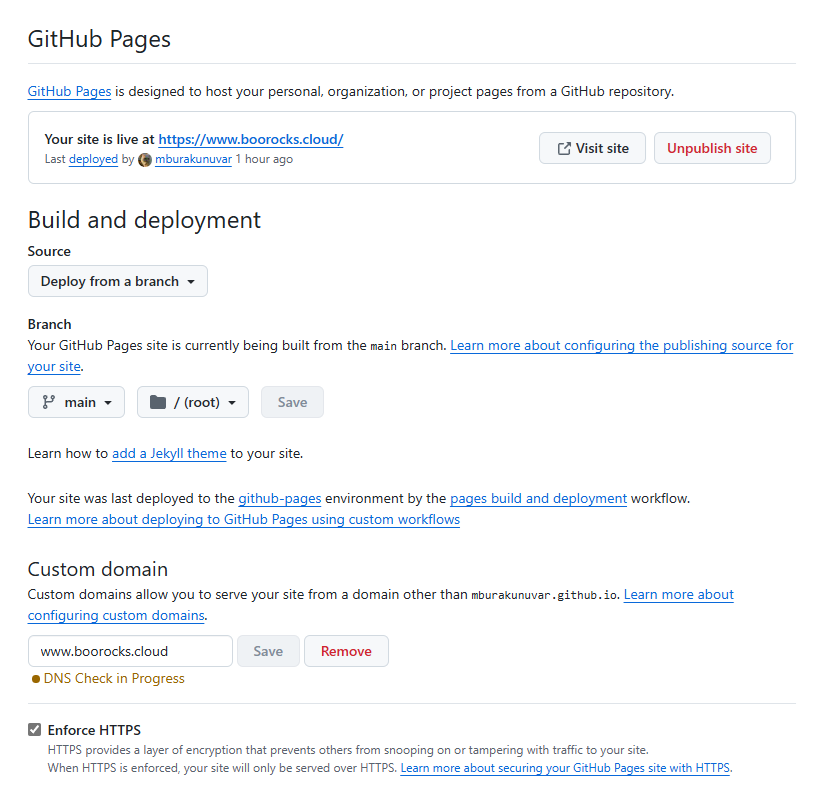
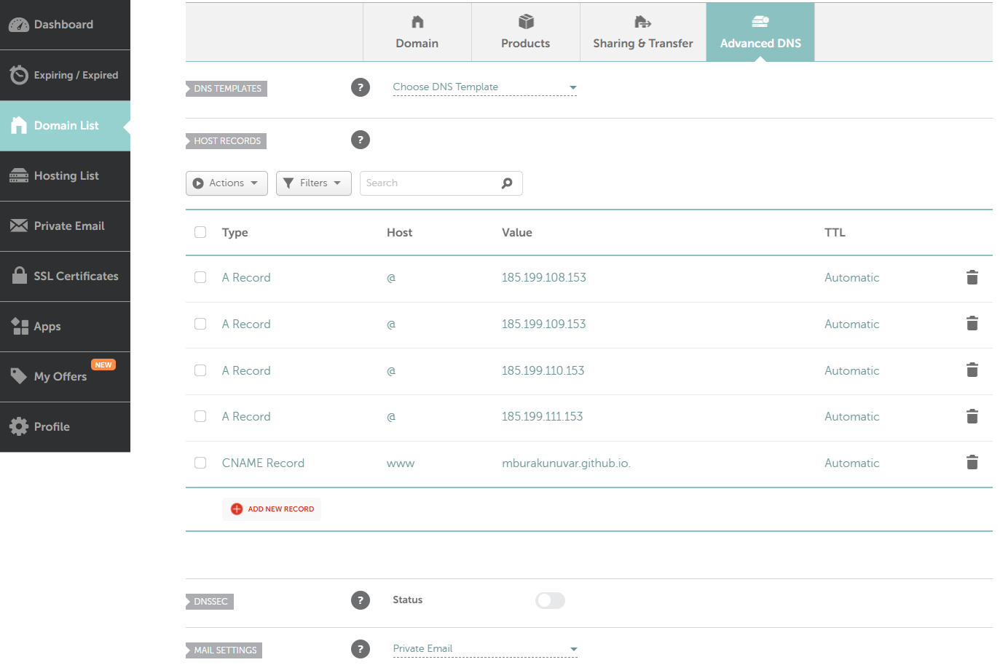

Introduction
Connecting your Namecheap domain to GitHub Pages is one of quickest ways to give your project custom web address instead of the default GitHub Pages URL. This guide provides step-by-step process and screenshots to:
- Link your domain and Enable HTTPs on GitHub
- Configure DNS records on Namecheap
Prerequisites
Before we dive in, make sure you have:
- A static webpage hosted on GitHub Pages
- Your domain being pointed to a DNS by Namecheap
GitHub Pages Custom Domain setup
Go to your GitHub repository settings, scroll down to the "GitHub Pages" section, and enter your custom domain name.

Updating Host Records on Namecheap
you'll need to update the DNS settings in your Namecheap account. Click manage your domain and go to Advanced DNS:
